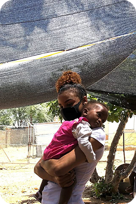
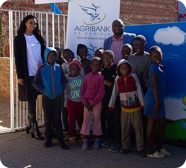
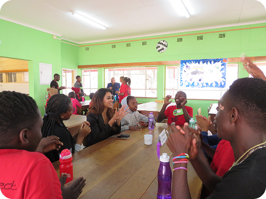

Youth Empowerment
Empowering young people with skills, mentorship, and opportunities to lead their communities and shape their futures.
"TRUE LEADERSHIP IS MEASURED
BY WHAT YOU GIVE, NOT WHAT YOU GAIN."
Built for the next generation
The Innovation Foundation is Selma Kamanya's commitment to something bigger than herself. It is her answer to the question she has asked since the beginning of her journey: what does it mean to use visibility, influence, and success actually mean if it does not go back to the people?
Through the foundation Selma is investing in Namibia's youth in the most practical and meaningful ways possible. Not just inspiration but tools, programs, resources, and real opportunities that can change the trajectory of young lives.
Empowering young people with skills, mentorship, and opportunities to lead their communities and shape their futures.
Teaching communities the principles of financial independence and economic participation for sustainable growth.
Creating meaningful connections and lasting impact through direct engagement with communities in need.
Building sustainable programs and initiatives that create generational change and lasting transformation.



The Innovation Foundation is still growing. The vision is long term and the work is ongoing. Selma's goal is to build a foundation that outlasts her public profile and institution that continues to invest in Namibian youth long after the cameras have moved on. She is actively looking for partners, sponsors, and collaborators who share this vision. If you believe in what Namibia's next generation can become, there is a place for you in this work.
TOGETHER WE BUILD A BETTER NAMIBIA?
WORK WITH ME